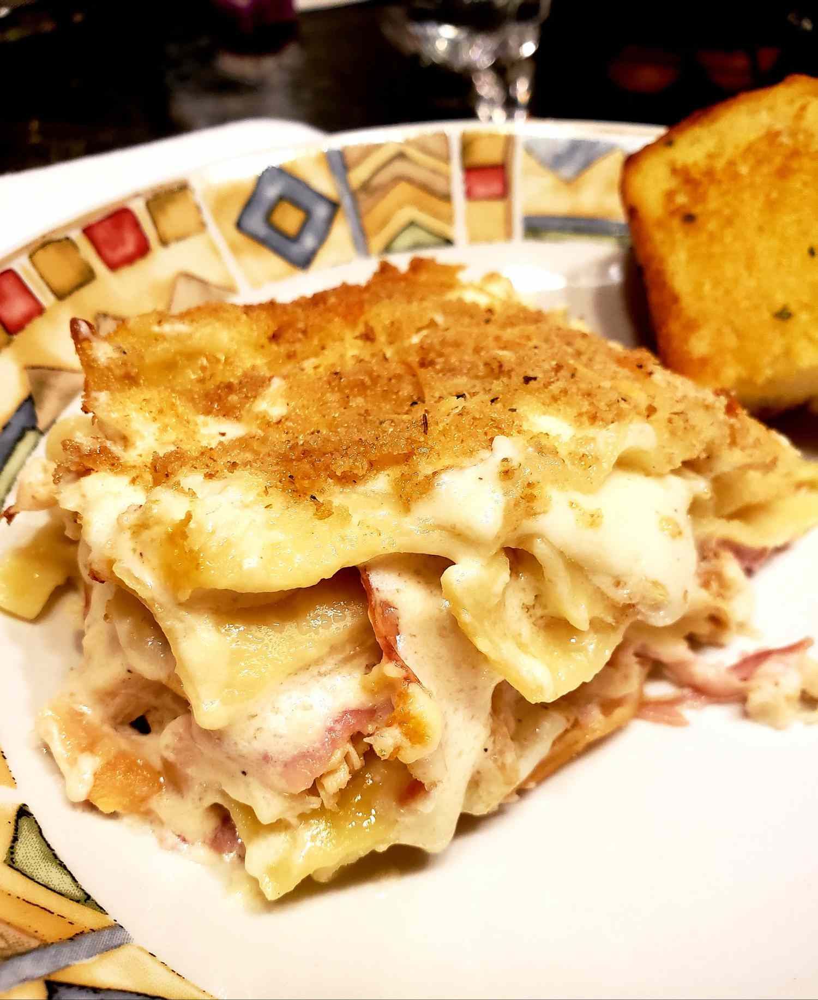

Chicken Cordon Bleu Lasagna

Description
This is a simple and fast chicken Cordon Bleu recipe in lasagna form — it's creamy, delicious, and satisfying.
Ingredients
- 1 (8 ounce) package lasagna noodles
- ½ cup butter
- 1 (8 ounce) package cream cheese, softened
- ½ teaspoon salt
- ½ teaspoon onion powder
- ¼ teaspoon ground black pepper
- 1 ¾ cups milk, warmed
- 2 cups shredded Swiss cheese, divided
- 2 ½ cups cooked chicken, chopped
- 8 ounces deli ham, chopped
- ½ cup bread crumbs
- 1 pinch Italian seasoning, or to taste
Steps
- Preheat the oven to 400 degrees F (200 degrees C).
- Bring a large pot of lightly salted water to a boil. Cook lasagna noodles in the boiling water, stirring occasionally until tender yet firm to the bite, about 8 minutes. Drain.
- Melt butter in a saucepan over medium heat; stir in cream cheese until it begins to melt, about 5 minutes. Season with salt, onion powder, and black pepper. Gradually whisk warm milk into cream cheese until smooth; stir in 1 ½ cups Swiss cheese. Bring sauce to a simmer, stirring constantly, until cheese has melted and sauce has thickened, 5 to 10 minutes. Remove from heat.
- Spread ¾ cup cheese sauce into the bottom of a 9x9-inch baking dish. Arrange ⅓ lasagna noodles over sauce; spread ½ cooked chicken and ½ ham over noodles. Pour 1 cup sauce over top. Repeat layers starting with ½ remaining lasagna noodles, remaining ½ chicken, remaining ½ ham, and 1 cup cheese sauce. Layer on remaining lasagna noodles, remaining sauce, remaining ½ cup Swiss cheese, and bread crumbs; sprinkle top with Italian seasoning. Cover dish with aluminum foil.
- Bake in the preheated oven until bubbling, about 25 minutes. Remove foil; continue baking until bread crumbs are browned, about 10 minutes more. Let casserole stand before serving, 5 to 10 minutes.
Home